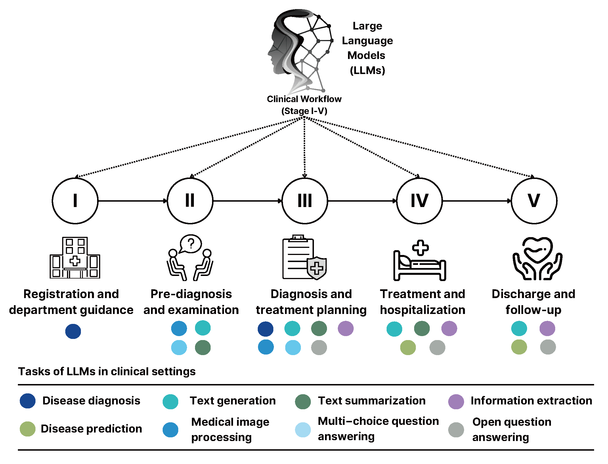

Brief introduction
We collected and recorded basic information about 203 large language models (LLMs) in the medical domain and their fulfillment of various clinical tasks. By considering a five-stage clinical workflow, we provide some recommendations for the clinical integration of LLMs. Emphasis is placed on our development of a clinical LLM selection tool, which is designed to provide evidence-based guidance to medical practitioners in identifying the LLMs that are best suited to their specific needs.
Five-stage clinical workflow

We considered a patient-oriented clinical workflow, with numbers I-V representing various stages where LLMs may be applied. Tasks of LLMs are represented by colored discs.
Clinical LLM Selection Tool
Welcome to the clinical LLM Selection Tool! This tool will help a wide range of medical practitioners identify the clinical LLM that is best suited to your specific needs. By answering a few questions, we will provide you with tailored LLM advice and the resources you need to get started. All of the information provided is derived from our review paper: Implementing Large Language Models in Healthcare: A Clinician's Review.
The clinical LLM selector content for stage I was very limited as we only found one clinical application of LLMs for stage I from the review we authored. We expect that future LLMs developments will lead to more clinical applications for stage I, and we will keep updating.